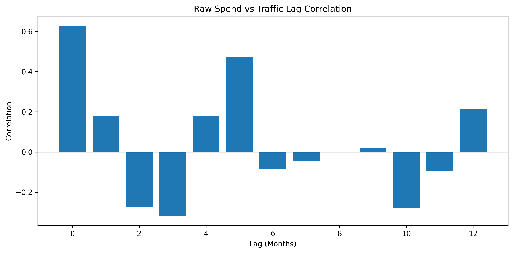
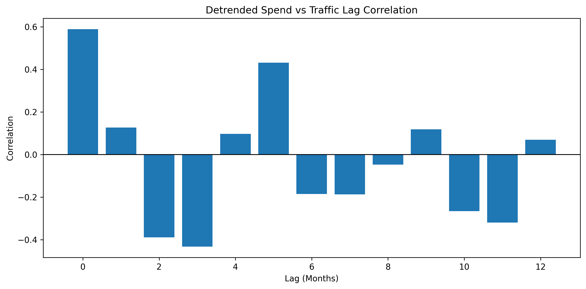
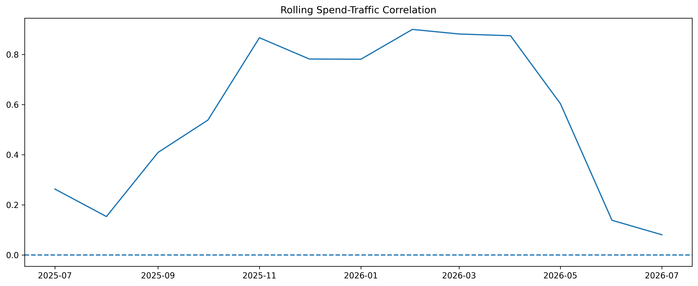
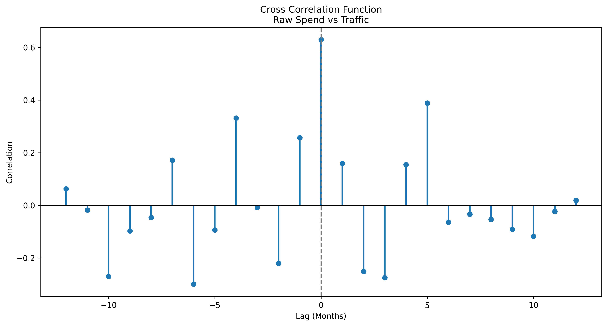
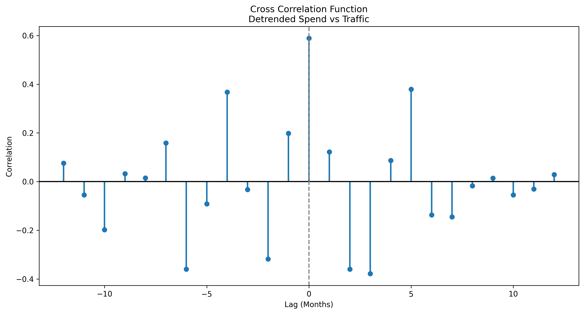
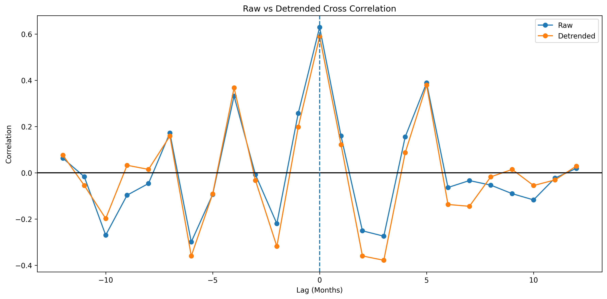

This report summarizes the temporal relationship between marketing spend and store traffic using Pearson correlation, lagged correlation analysis, rolling correlations, DMA-level correlations, and cross-correlation functions (CCF).
This dashboard summarizes the primary findings from the national cross-correlation analysis between marketing spend and store traffic.
The overall Pearson correlation summarizes the linear relationship between national marketing spend and store traffic across the study period.
| Metric | Value |
|---|---|
| Overall Correlation | 0.629 |
Lagged correlations evaluate whether marketing spend is more strongly associated with traffic occurring several months into the future.

| Analysis | Lag | Correlation |
|---|---|---|
| raw | 0 | 0.629 |
| raw | 1 | 0.177 |
| raw | 2 | -0.275 |
| raw | 3 | -0.318 |
| raw | 4 | 0.180 |
| raw | 5 | 0.474 |
| raw | 6 | -0.087 |
| raw | 7 | -0.046 |
| raw | 8 | -0.002 |
| raw | 9 | 0.021 |
| raw | 10 | -0.280 |
| raw | 11 | -0.092 |
| raw | 12 | 0.213 |

| Analysis | Lag | Correlation |
|---|---|---|
| detrended | 0 | 0.589 |
| detrended | 1 | 0.127 |
| detrended | 2 | -0.390 |
| detrended | 3 | -0.433 |
| detrended | 4 | 0.097 |
| detrended | 5 | 0.431 |
| detrended | 6 | -0.186 |
| detrended | 7 | -0.187 |
| detrended | 8 | -0.047 |
| detrended | 9 | 0.118 |
| detrended | 10 | -0.266 |
| detrended | 11 | -0.320 |
| detrended | 12 | 0.070 |
Rolling six-month correlations illustrate how the relationship between marketing spend and traffic changed throughout the study period.

DMA-level correlations identify geographic markets where historical marketing spend has shown the strongest association with store traffic.
| DMA | Correlation |
|---|---|
| Orlando-Daytona Beach-Melbourne, FL | 0.731 |
| El Paso, TX (Las Cruces, NM) | 0.730 |
| Boston, MA (Manchester, NH) | 0.706 |
| Oklahoma City, OK | 0.701 |
| Washington, DC (Hagerstown, MD) | 0.647 |
| Philadelphia, PA | 0.642 |
| San Antonio, TX | 0.636 |
| Houston, TX | 0.597 |
| Los Angeles, CA | 0.593 |
| San Diego, CA | 0.590 |


Comparing the raw and detrended cross-correlation functions helps distinguish relationships driven by shared trends from those that persist after removing long-term movement and seasonality.
